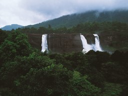
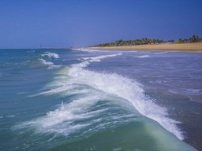

Munnar
- 
Thrissuer

Goa
- 
Gokarna

Shillong

Kochi

Munnar

Bekal
One of the oldest civilisations in the world, India is a mosaic of multicultural experiences. With a rich heritage and myriad attractions, the country is among the most popular tourist destinations in the world. It covers an area of 32, 87,263 sq. km, extending from the snow-covered Himalayan heights to the tropical rain forests of the south. As the 7th largest country in the world, India stands apart from the rest of Asia, marked off as it is by mountains and the sea, which give the country a distinct geographical entity.
India is a home to the finest architectural heritage, serene ghats, spectacular landscapes and largest tiger reserve

WILDLIFE

HERITAGE

HILL STATION

BEACH

PILGRIME

ADVENTURE